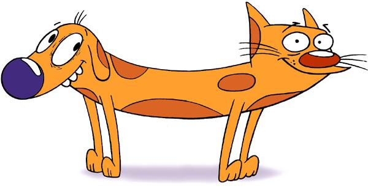

Cat or Dog? Will a ML Algo (trained with 10k Images an VGG weights) Predict this as a Cat or Dog?  Authors: Will Solomon & Yimming Ling Check Out Yimming's Keras Walkthrough | Get the ML TF Keras Code